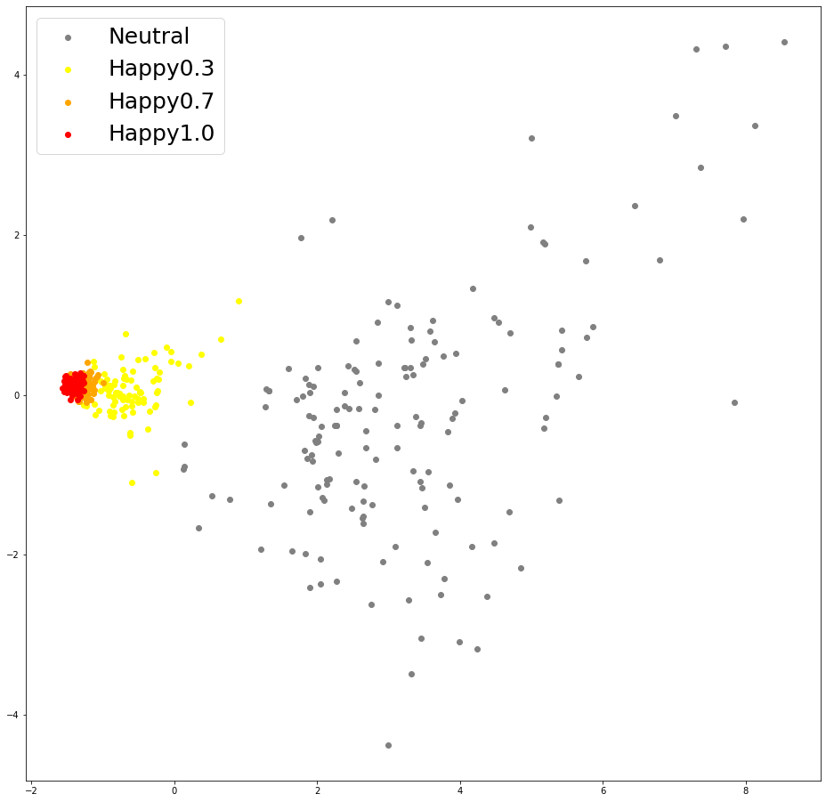
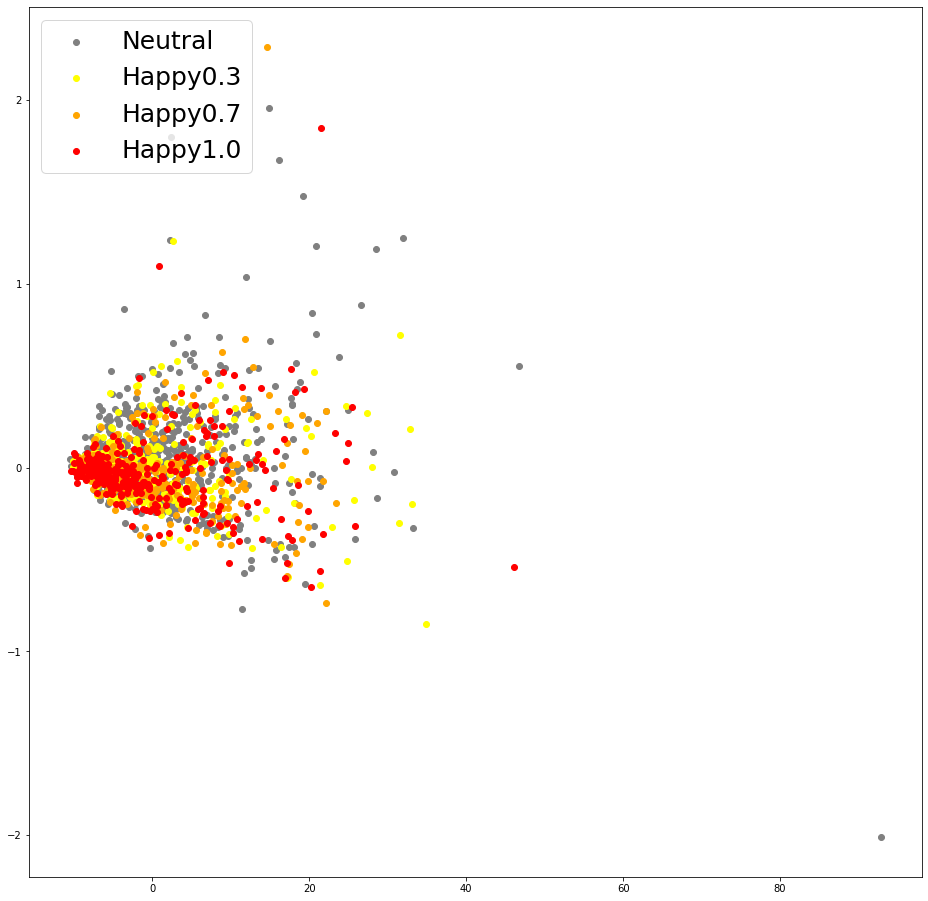

U-Singer: Multi-Singer SInging Voice Synthesizer that Controls Emotional
Intensity
Authors
Anonymous Authors
Abstract
We propose U-Singer, the first multi-singer emotional singing voice synthesizer
that expresses various levels of emotional intensity. During synthesizing
singing voices according to the lyrics, pitch, and duration of the music score,
U-Singer reflects singer characteristics and emotional intensity by adding
variances in pitch, energy, and phoneme duration according to singer ID and
emotional intensity. Representing all attributes by conditional residual
embeddings in a single unified embedding space, U-Singer controls mutually
correlated style attributes, minimizing interference. Additionally, we apply
emotion embedding interpolation and extrapolation techniques that lead the model
to learn a linear embedding space and allow the model to express emotional
intensity levels not included in the training data. In experiments, U-Singer
synthesized high-fidelity singing voices reflecting the singer ID and emotional
intensity. The visualization of the unified embedding space exhibits that
U-singer estimates the correct variations in pitch and energy highly correlated
with the singer ID and emotional intensity level.
Model Structure
(a) Overall Architecture
(b) Variance Adaptor
(c) ASPP-Transformer
Figure illustrates the structure of U-Singer. It takes lyrics (phoneme
sequence), note pitch, and note duration as input. First, it retrieves the
low-level embeddings of the phoneme and note pitch from the embedding tables,
respectively.
We combine them by concatenation followed by a linear layer. The linear layer
provides a more general form and exhibited higher fidelity than element-wise
addition in our preliminary experiments. The lyric-pitch encoder converts the
combined embedding into a high-level representation and transmits it to the
variance adapter.
Audio Samples
Part 1. Singer Similarity
U-Singer can generate audio samples containing distinguishable singer
characteristic.
F0
F1
M1
F2
M2
Happy sample 1 mel
Happy sample 1 wav
Happy sample 2 mel
Happy sample 2 wav
Sad sample 1 mel
Sad sample 1 wav
Sad sample 2 mel
Sad sample 2 wav
Part 2. Emotion Control
U-Singer can generate audio samples with different emotional intensities. Here are few samples with emotion of happy and sad, respectively.
With our emotion embedding interpolation and extrapolation, we can even generate emotional intensity which are not in the dataset.
Female
Neutral
Happy0.3
Happy0.7
Happy1.0
Happy1.3 (Extrapolation)
happy sample 1 mel
happy sample 1 wav
happy sample 2 mel
happy sample 2 wav
Male
Neutral
Happy0.3
Happy0.7
Happy1.0
Happy1.3 (Extrapolation)
happy sample 1 mel
happy sample 1 wav
happy sample 2 mel
happy sample 2 wav
Female
Neutral
Sad0.3
Sad0.7
Sad1.0
Sad1.3 (Extrapolation)
sad sample 1 mel
sad sample 1 wav
sad sample 2 mel
sad sample 2 wav
Male
Neutral
Sad0.3
Sad0.7
Sad1.0
Sad1.3 (Extrapolation)
sad sample 1 mel
sad sample 1 wav
sad sample 2 mel
sad sample 2 wav
Visualization Results
Part 1. Singer and Emotion Embeddings
(a) Singer Embedding
(b) Emotion Embedding
Visualization of U-Singer's residual embedding. We visualized Residual embeddings of singer and emotion into 2-dimensional space using principle component analysis (PCA).
Part 2. Pitch and Energy Embeddings
1. Pitch embeddings

(a) Pitch Embeddings of baseline (Happy)
(b) Pitch Embeddings of baseline (Sad)
(c) Pitch Embeddings of U-Singer (Happy)
(d) Pitch Embeddings of U-Singer (Sad)
Visualization of pitch embeddings obtained by conventional encoder of EXT.FS2(a,b) and residual encoder of U-Singer(c,d).
2. Energy embeddings

(a) Energy Embeddings of baseline (Happy)
(b) Energy Embeddings of baseline (Sad)
(c) Energy Embeddings of U-Singer (Happy)
(d) Energy Embeddings of U-Singer (Sad)
Visualization of energy embeddings obtained by conventional encoder of EXT.FS2(a,b) and residual encoder of U-Singer(c,d).